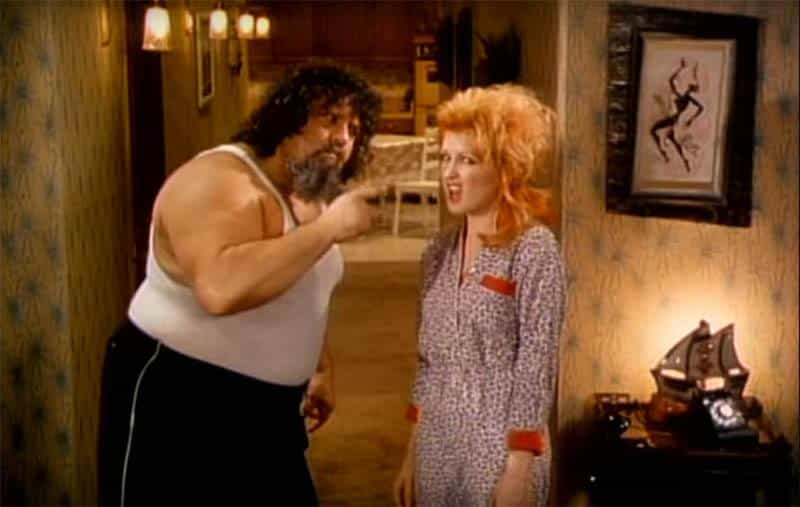
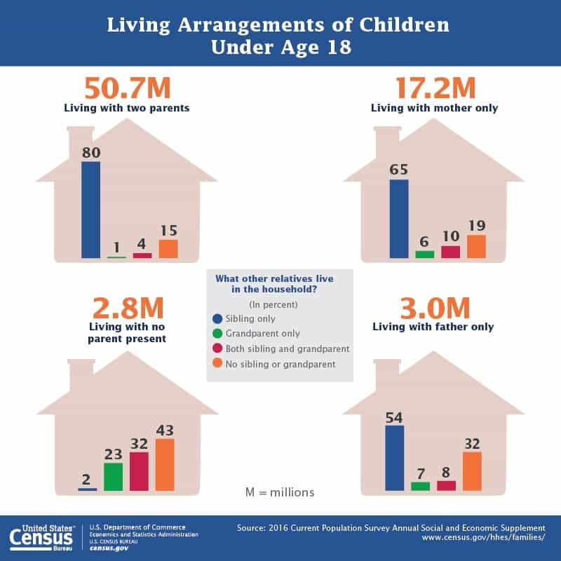

Daryush "Roosh" Valizadeh created ROK in October 2012. You can visit his blog at RooshV.com or follow him on Twitter and Facebook.


A lot of men like to believe that the promiscuous or degenerate impulses of women today had to be programmed into them, but most of those impulses were there all along. All women needed was a more permissible environment. One song that hinted at this truth was Cyndi Lauper’s nearly forty-year-old single “Girls Just Want To Have Fun.”
On a casual listen, the song seems to portray a girl’s innocent need to party, but decoding the lyrics reveal that “have fun” really means “fuck.” The song then makes perfect sense and accuately portrays the female behavior we see today.
I come home in the morning light
My mother says when you gonna live your life right
Oh mother dear we’re not the fortunate ones
And girls they want to have fun
Oh girls just want to have fun
Cyndi went out, partied, and had sex with a man. After coming home, she received token resistance from her mother, but not enough to change her behavior, perhaps because mother also wanted to live out her own youth in the same manner.
The phone rings in the middle of the night
My father yells what you gonna do with your life
Oh daddy dear you know you’re still number one
But girls they want to have fun
Oh girls just want to have

The father is portrayed as a disgusting, idiot slob who is out of touch when compared to his empowered daughter. It’s a surprise that he even lived in the house. Today, 23% of children are raised by single parents. Removing the father figure is especially dangerous to a female because she then attempts to simulate his love through shallow sexual encounters or attention whoring. Even with a father in the home, there is no sign that Cyndi was punished for her late-night party lifestyle.

Some boys take a beautiful girl
And hide her away from the rest of the world
I want to be the one to walk in the sun
Oh girls they want to have fun
Oh girls just want to have
Cyndi wants to display her beauty to everyone, even if she already has the love of one man. It’s important for her to always be in the position of upgrading her current man if she happens to find something better. She wants to have the option of fucking other guys on the side, because relationships are too boring for a young girl who has her entire life ahead of her.
That’s all they really want
Some fun
When the working day is done
Oh girls, they want to have fun
Oh girls just want to have fun
Before feminism really dug its heels into the culture, Cyndi already assumed a “working day” for women. Even she knew that work would be so dull that it would have to be counter-balanced with fun and casual sex. Girls spend the day working to be independent from men to spend their nights getting used by attractive men at night.
The song was originally released in 1979, but does it not perfectly describe the mentality of an average woman in 2018? Today’s woman spends her prime having fun and only considers settling down when her career is “established” or her options for attractive men begin to dwindle. It then becomes a game of musical chairs to lock down any reasonable man, but even in that case, she will still be open to having fun on the side if a new man excites her vagina.
Have enough fun yet?
I used to believe that men and women had to be somewhat brainwashed to participate in degenerate behaviors, but I no longer think that is the case. The problem with the modern era is not that it programs people to be bad, but it allows and encourages people to be bad by simply acting on their human impulses. The wives you think were so traditional fifty or one-hundred years ago would be just as promiscuous today if they had the choice, and that includes your beloved grandmothers. Societies of the past did a reasonable job of constraining the flaws of our species, but those constraints are now gone, and what you see today is actually more “human” than ever.
This article was originally published on Roosh V.
Read Next: Women Who Don’t Have Babies Go Crazy